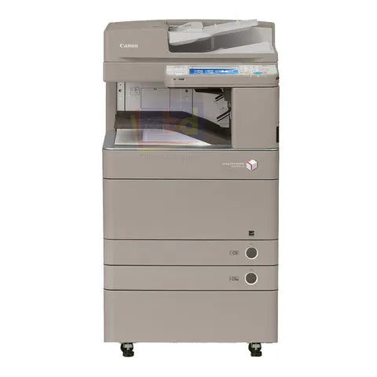

Canon iR-ADV C5035 / C5045
Impressão colorida, gavetas, frente e verso e organização correta das cópias.
Iniciando a Impressão
Com seu arquivo aberto clique no ícone de impressora ou use o atalho Ctrl + P. O primeiro passo é selecionar a impressora correta no campo "Destino".

Caso a Canon iR-ADV C5035 não apareça de imediato, clique em Ver mais... e selecione-a na lista.

Impressão Padrão
Se você deseja fazer uma impressão comum, basta clicar no botão Imprimir.
- Páginas: No personalizado você pode especificar quais páginas imprimir. "1-5, 7" para imprimir da página 1 até a 5 e também a página 7, pulando a 6.
- Tamanho do Papel: A impressora Canon iR-ADV C5035 geralmente utiliza diversos tamanhos, sendo os mais utilizados a A4 e A3.
- Frente e Verso: Escolha "Borda longa" para virar a página como um livro.

Impressão Avançada
Se precisar mudar a bandeja, agrupar cópias ou ajustar a qualidade, clique em Imprimir utilizando a caixa de diálogo de sistema para abrir o painel avançado da Canon.

Selecione a impressora de novo e clique em Mais Configurações.

Configurações da Impressora
Nesta tela você pode ajustar as configurações mais detalhadas da impressão, como tamanho do papel, orientação e quantidade de cópias.
- Page Size (Tamanho do Papel): Selecione o tamanho do papel que será utilizado, como A4 ou A3.
- Output Size: Normalmente deve ser o mesmo tamanho do papel selecionado.
- Copies (Cópias): Define quantas cópias do documento serão impressas.
- Orientation (Orientação):
- Portrait: modo retrato (vertical).
- Landscape: modo paisagem (horizontal).